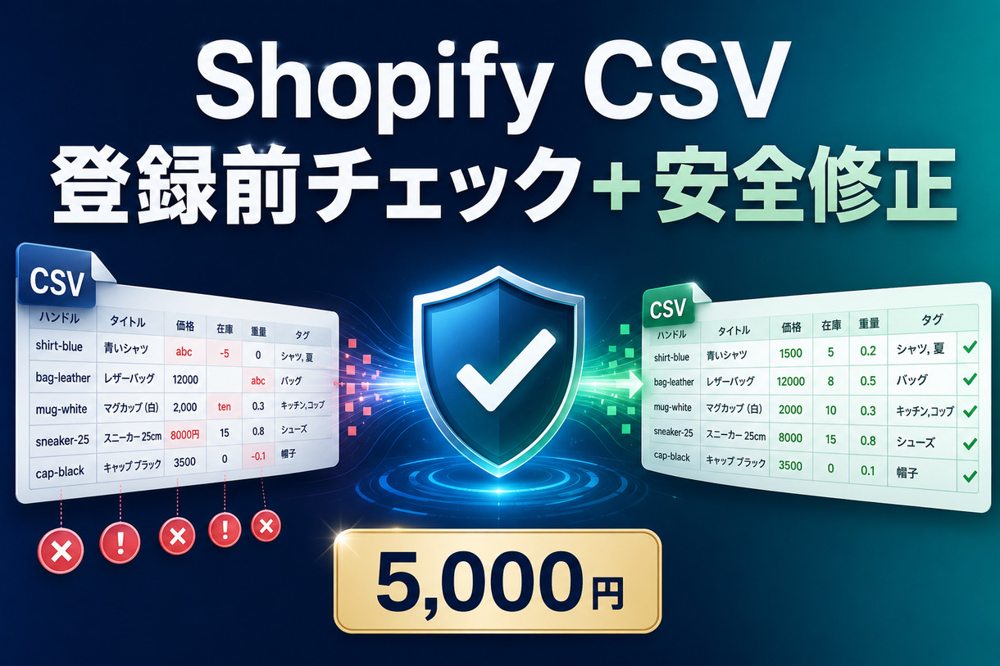

PAID PAIN → MVP → FIRST SALE
先に、お金が動いている
悩みを探す。
AI VENTURE BUILDER v0.4は、実際にお金が動く悩みから0円MVPを作り、商品化・販売準備・納品・数値改善まで進めます。完成条件はコードではなく、最初の有料受注を取りに行ける状態です。
01 Paid Pain02 公開資産03 MVP04 QA05 商品化06 販売07 納品08 改善
01 · PAID PAIN SCOUT
誰が、何にお金を払っている？
CrowdWorks・ココナラ・Upworkなどで確認した実際の販売・契約・有料購入を先に登録します。Marketplace自動スクレイピングは行いません。
02 · DEMAND EVIDENCE
需要を「証拠」で固定する
Buildには、sale / contract / paid_review の実支払い証拠を最低1件、補助証拠を含めて合計3件以上が必要です。表示価格や競合の存在だけでは通しません。
03 · PUBLIC ASSET SCOUT
悩みを解く無料部品を探す
PAID PAIN Gate通過後に解放されます。
05 · BUILD BRIEF
Build Gate通過後だけMVPへ
AUTO BUSINESS EXECUTOR · FIRST PROOF BUSINESS
Shopify CSV事業を、販売と納品まで動かす
LAUNCHER・SELLER・DELIVERY OPERATOR・GROWTH OPERATORが、MVP完成後の実行を引き継ぎます。
LAUNCHER / SELLER
5,000円の商品として出品する

DELIVERY OPERATOR
受注から納品までを標準化
- 顧客CSVを受領
- Preflight実行
- 安全修正
- 再チェック
- PASS / REVIEW / HOLD
- 納品パック生成
- 人間最終確認
GROWTH OPERATOR